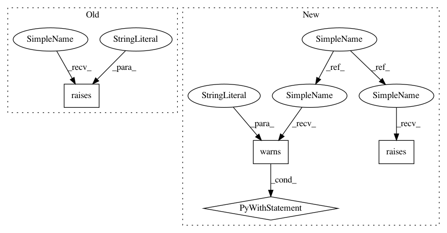

91473147e57464173dedb00ce20f3d5aefd883bd,mne/preprocessing/tests/test_ica.py,,test_ica_noop,#Any#Any#Any#,168
Before Change
if isinstance(n_components, int) and \
isinstance(max_pca_components, int) and \
n_components > max_pca_components:
with pytest.raises(ValueError, match="n_components must be smaller.*"):
ICA(**kwargs)
return
ica = ICA(**kwargs)
After Change
return
ica = ICA(**kwargs)
if n_components == 10 and n_pca_components == 0.9999:
with pytest.raises(RuntimeError, match=".*requires.*PCA.*"):
ica.fit(raw)
return
if n_components == 10 and n_pca_components == 10:
ctx = pytest.warns(RuntimeWarning, match=".*unstable.*integer <= 9")
bad = True // pinv will fail
elif n_components == 0.9999 and n_pca_components == 8:
ctx = pytest.raises(RuntimeError, match="requires 9 PCA values.*but")
bad = "exit"
else:
bad = False // pinv will not fail
ctx = nullcontext()
with ctx:
ica.fit(raw)
assert ica._max_pca_components is None
if bad == "exit":
return
raw_new = ica.apply(raw.copy())
In pattern: SUPERPATTERN
Frequency: 3
Non-data size: 4
Instances
Project Name: mne-tools/mne-python
Commit Name: 91473147e57464173dedb00ce20f3d5aefd883bd
Time: 2020-10-12
Author: larson.eric.d@gmail.com
File Name: mne/preprocessing/tests/test_ica.py
Class Name:
Method Name: test_ica_noop
Project Name: mne-tools/mne-python
Commit Name: c4119388444e5867ee1a054100c78f57c9f2da25
Time: 2020-04-20
Author: dan@mccloy.info
File Name: mne/viz/tests/test_epochs.py
Class Name:
Method Name: test_plot_psd_epochs
Project Name: mne-tools/mne-python
Commit Name: 826ddd2f669fb35e574698042378c83e9b1217ca
Time: 2021-01-14
Author: dan@mccloy.info
File Name: mne/viz/tests/test_topo.py
Class Name:
Method Name: test_plot_joint
Project Name: mne-tools/mne-python
Commit Name: 91473147e57464173dedb00ce20f3d5aefd883bd
Time: 2020-10-12
Author: larson.eric.d@gmail.com
File Name: mne/preprocessing/tests/test_ica.py
Class Name:
Method Name: test_ica_noop